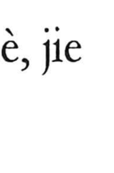

価

Kun: atai | On: ka
value ・ price ・ worth ・ valuation
Explanation
価, formerly 價, adds 人, a person, to 賈 as its sound element. 賈 concerns buying and selling. Its older form includes a covered vessel, with 鼎 later resembling 貝, and the goods contained for exchange.
價 takes both sound and commercial meaning from 賈. It names the price paid for a thing—the amount required in return for it.
From the exchange price, the meaning broadens to worth more generally. A person, object, or achievement can be assessed for its value even when no sale is involved. 価値 and 評価 retain this movement from a concrete price to the judgement of what something is worth.